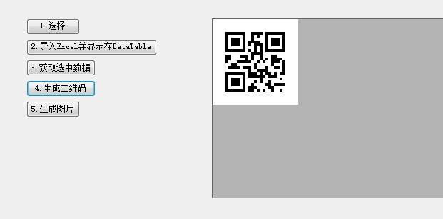
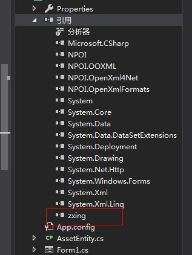

原文出处:本文由博客园博主霸道流氓提供。
原文连接:https://www.cnblogs.com/badaoliumangqizhi/p/11426781.html
原文连接:https://www.cnblogs.com/badaoliumangqizhi/p/11426781.html
场景
zxing.dll下载
https://download.csdn.net/download/badao_liumang_qizhi/11623214
效果

实现
新建Winform程序，将上面下载的zxing.dll添加到引用。

拖拽一个按钮，双击进入其点击事件。
private void button5_Click(object sender, EventArgs e)
{
//二维码要存储的内容
string codeString = "测试";
//生成二维码并返回Bitmap
Bitmap bitmap= ZxingHelper.CreateQRCode(codeString);
//保存图片到本地
//bitmap.Save(@"C:\Users\Administrator\Desktop\a.png");
//将Bitmap转换成Image对象
Image img = Image.FromHbitmap(bitmap.GetHbitmap());
//设置pictureBox的图片源
this.pictureBox1.Image = img;
}
然后在页面上拖拽一个pictureBox用来显示照片
这里新建了一个工具类ZxingHelper,调用其CreateQRCode方法返回生成二维码的Bitmap格式。
这时如果想将其保存到本地，就使用Bitmap的Save()方法，参数是要保存的全路径。
如果想将照片显示在窗体上的pictureBox控件上，则使用Image的FromHbitmap()方法进行转换。
工具类中生成二维码的代码
public static Bitmap CreateQRCode(string asset)
{
EncodingOptions options = new QrCodeEncodingOptions
{
DisableECI = true,
//编码
CharacterSet = "UTF-8",
//宽度
Width = 120,
//高度
Height = 120
};
BarcodeWriter writer = new BarcodeWriter();
writer.Format = BarcodeFormat.QR_CODE;
writer.Options = options;
return writer.Write(asset);
}